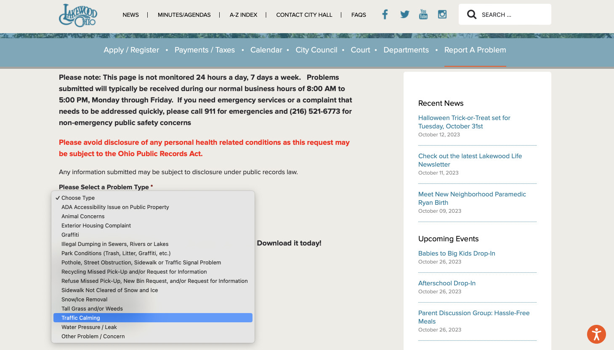

Welcome to the community website for residents of Giel Ave. located in Lakewood, OH. The purpose of this website is to serve as a central location to organize community events and outreach for the residents of Giel Ave.
Community Concerns
-
Traffic Calming
Some residents have expressed concern with how fast vehicles travel down Giel Ave. – especially considering the number of young children that live on our street.
The City of Lakewood has established a recommended path for nominating a street for traffic calming measures. There is a five-step process that the city follows once a street is under consideration. Per the cities' established guidelines, Giel Ave. is eligible for traffic calming measures and it meets the requirements for being considered.
How to take action
In order for Giel Ave. to be considered for traffic calming measures, the residents need to nominate the street via the online Report a Problem form. The more residents that nominate our street, the higher our chances of being considered.
The first thing you'll want to do when you go to the Report a Problem page is choose "Traffic Calming" from the "Problem Type" menu:

The page will then update with a form that you'll need to fill out. The first part of the form asks for your contact information and the second part of the form is about the issue you're reporting — here's a template for filling in that information:
For Location Type choose "Specific Address" and then enter your address details. For Nearest Cross Street/Intersection you can enter "Between Detroit and Clifton". You can skip Additional Location Details if you feel the above description is clear enough. For Description of Problem you can enter something like the following:
I am concerned about the speed of vehicles traveling on Giel Ave. The posted speed limit is 25 mph, however, I've observed vehicles regularly traveling in excess of that speed. The hill at the top of the street where Giel Ave. meets Detroit seems to exacerbate the problem as vehicles build up speed as they come down the hill. I'm particularly worried because we have a lot of young children that live on our street.
Click/tap the Submit button and that's it.
{kind=link}
{kind=link}
{kind=link}
Community Resources
-
Ward: 3
-
Ward 3 Council Member:
John Litten (Council President)
(216) 302-8333
john.litten@lakewoodoh.net -
Ward 3 Patrol Officer:
Officer William McCarthy
(216) 334-5657
william.mccarthy@lakewoodoh.net -
Police Non-Emergency: (216) 521-6773
-
Animal Control: (216) 529-5020